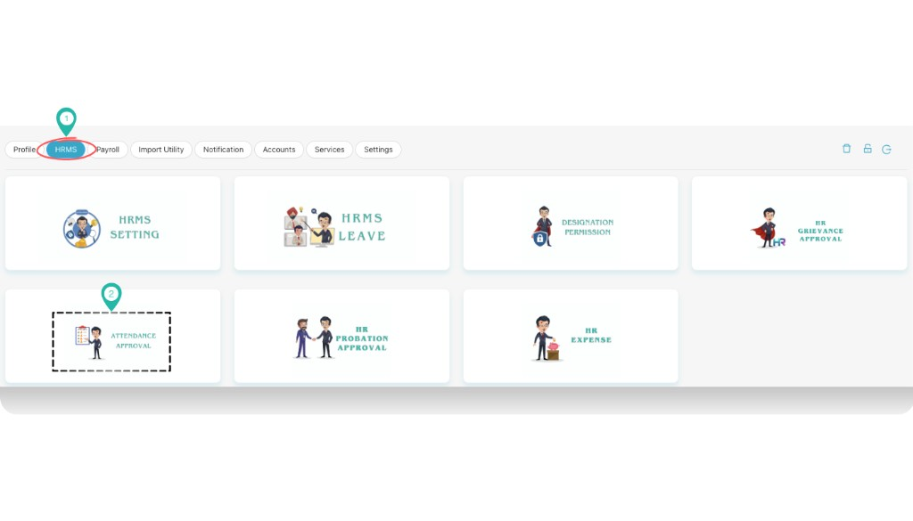
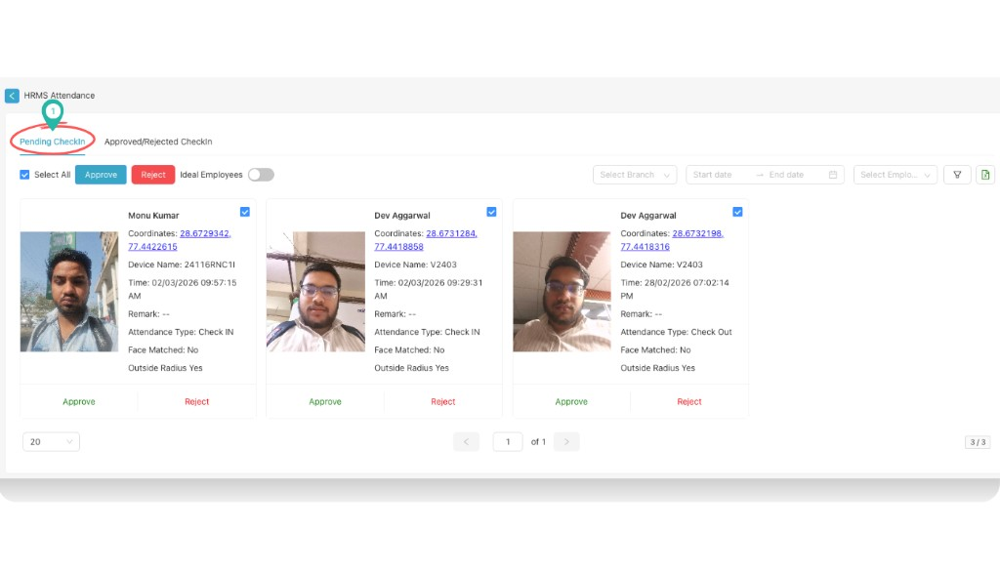
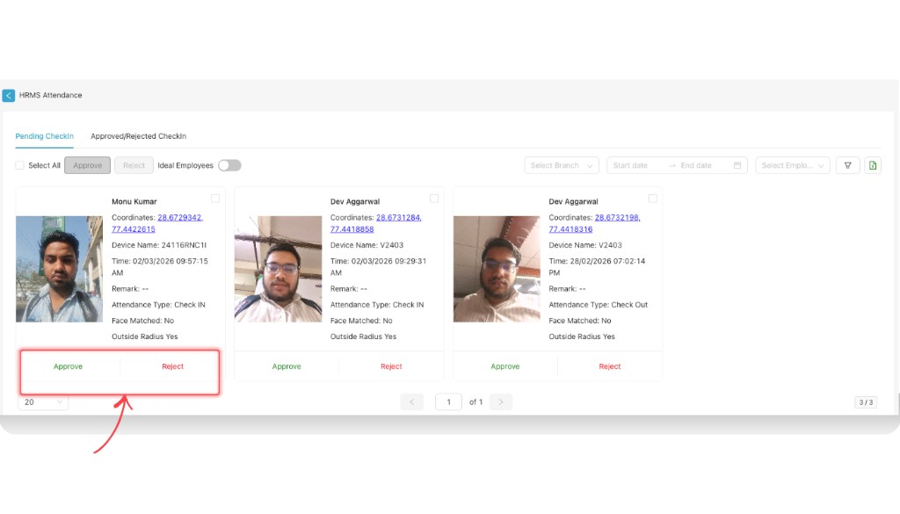
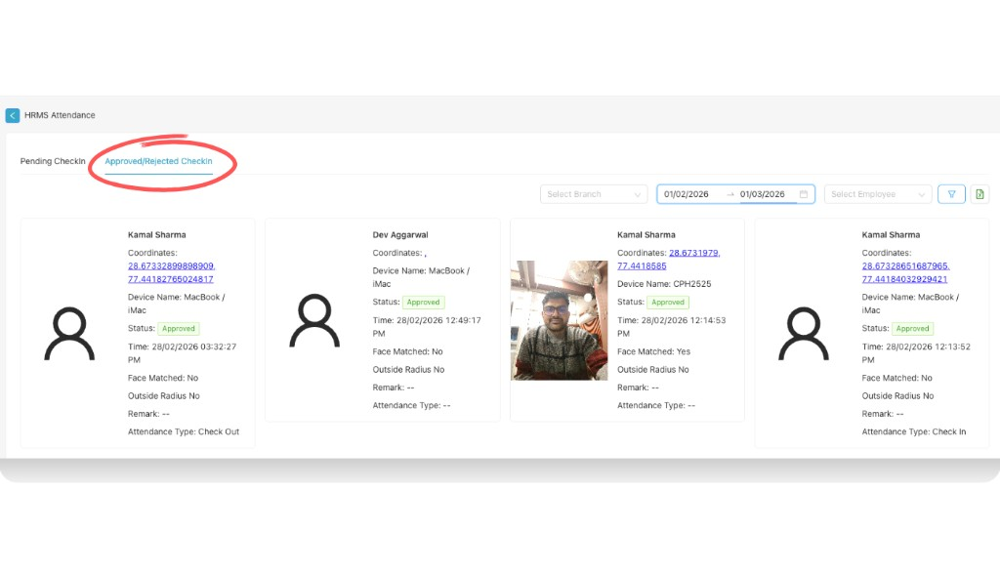

Attendance Approval
Use the Attendance Approval module (Part C — HRMS for HRs) to review and approve or reject employee check-in and check-out records. Go to Dashboard → Profile settings → HRMS → Attendance approval. HRMS Attendance has two tabs: Pending checkin (where HR or admins approve or reject attendance) and Approved/Rejected checkin (where you can see status and other information for processed records).
Path
How to open Attendance Approval
Go to Dashboard
From the left navigation, click Dashboard. In the top-right corner, click your profile name or company name (e.g. “Kamal Associ…”) to open profile options.

Select Profile settings
From the profile menu, select Profile settings.
Select HRMS, then Attendance approval
In Profile settings, click the HRMS tab in the top navigation. On the HRMS screen, click the ATTENDANCE APPROVAL card.

HRMS Attendance screen
The HRMS Attendance screen opens with two tabs: Pending Checkin and Approved/Rejected Checkin. Use the sections below to work with each tab.
Pending Checkin
In the Pending Checkin tab, HR or admins can review attendance records that are waiting for approval. Each record appears as a card showing employee name, photo, coordinates, device name, time, remark, attendance type (Check IN / Check Out), face matched status, and outside radius.

Bulk approve or reject (Select All)
Using Select All, HR or admins can approve or reject all displayed attendance at once:
- Check the Select All checkbox to select all records on the page.
- Click the blue Approve button to approve all selected records.
- Click the red Reject button to reject all selected records.
You can also filter by Select Branch, Start date, End date, and Select Employee before using Select All, so that only the filtered set is selected.
Approve or reject a single attendance
To approve or reject one employee’s attendance, use the actions on that employee’s card:
- Optionally check the checkbox on the card to include it in a multi-select, or
- Click the green Approve or red Reject button at the bottom of the employee’s attendance card.

Other controls on this screen include the Ideal Employees toggle and filter/export icons to narrow or export the list.
Approved/Rejected Checkin
Switch to the Approved/Rejected Checkin tab to view attendance records that have already been processed. Here you can see:
- Status — whether each record was Approved or Rejected (e.g. shown in a green “Approved” badge).
- Other information — employee name, coordinates, device name, time, face matched, outside radius, remark, and attendance type, same as in Pending Checkin but with the final status applied.

Use Select Branch, date range, and Select Employee to filter the list. The table/cards show the same kind of details as Pending Checkin, plus the approval status.